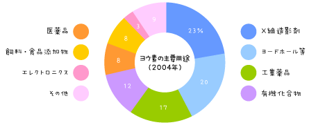

|
Lesson8 : ヨウ素（ヨード）について
8-1 ヨウ素（ヨード）に関する発見
ヨウ素（ヨード）は原子番号 53の元素で、原子量は126.90447、元素記号は Iと表されます。医学の領域では「ヨード」と表現されますが、これはドイツ語のJodからきています。英語ではiodineです。
1811年にフランス人のクールトア（B.Courtois）によって海藻類を燃やした灰から発見されました。（1813年と書かれた資料もありますが、「元素発見の歴史３」（朝倉書店、1990年刊）という本によれば、1811年にクールトアが最初の実験をし、1813年に彼の後継者が公表したため、公的には1813年が「ヨウ素」発見の年とされているようです。）
その発見から間もない1820年には、スイス、ジュネーブの医師コワンデ（Coindet）が甲状腺腫の治療にヨウ素を推奨しましたが、量の調節がわかっていなかったために、ヨード過剰によると考えられる甲状腺機能亢進症を引き起こしてしまいました。広くクレチン症、甲状腺腫の治療に使われるのは、20世紀になってからです。
8-2 ヨウ素（ヨード）とは何だろう？
ヨウ素は、他の物質と混ざった（化合物）の状態で、海水、海藻、鉱物、かん水（塩分を含む水）などに含まれています。ヨウ素そのものは元素なので、化学合成して作ることができないため、ヨウ素を含む物質から採り出して製造されます。
日本は世界の中でチリに次いで第2位のヨウ素生産量で、日本国内のなかではおもに千葉県で生産されています。千葉県の広い地域で地層中に天然ガスと一緒に塩分を多く含む地下水（かん水）があり、その中にヨウ素が多く含まれているためです。
8-3 ヨウ素（ヨード）の役割
|
ヨウ素はわたしたちの暮らしのなかで、さまざまな状態に加工され使われています。 医療分野、化学製品の分野などにおいて、ヨウ素は利用されています。いちばん身近なものでは、ケガをしたときの消毒に用いられる「ヨードチンキ」などといわれる茶色い液体にヨウ素は用いられています。 |
 |
近年では、液晶テレビやパソコン、デジタルカメラ、携帯電話など様々な製品に使用されているLCD（Liquid Crystal Display、液晶ディスプレイ）の偏光板にヨウ素は重要であり、需要は拡大しています（参照：合同資源産業株式会社のホームページ）。
そして、ヨウ素は甲状腺の働きにおいて非常に大切な成分なのです。